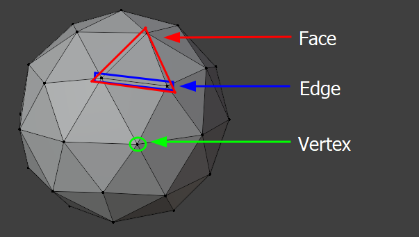

What are 3D graphics?
3D graphics, according to this Wikipedia page, are:
3D models are comprised of faces, which each contain 3-4 edges, each edge connection being a "vertex".

What 3D software should I use?
There are plenty of 3D softwares out there to use, whether that be for 3D modelling, sculpting, or animation! Here's a list a few lists of some popular ones:
Modelling, animation, and rendering
Advanced sculpting
- ZBrush - Paid
Animation, simulation, and rendering
- Unreal Engine 5 - Free
All of these are great 3D softwares, but each has their own use. The best for hobbyists and small teams would be Blender being that it is free and kept up-to-date by its team through donations and various project backers. Maya and 3ds Max are best for large teams that require live support or update requests from the AutoDesk team - otherwise, they are both very expensive licenses for individuals or small teams. Other softwares listed here are for more specific use-cases - ZBrush being great for 3D sculpting, and UE5 being great for a cinematic rendering pipeline.